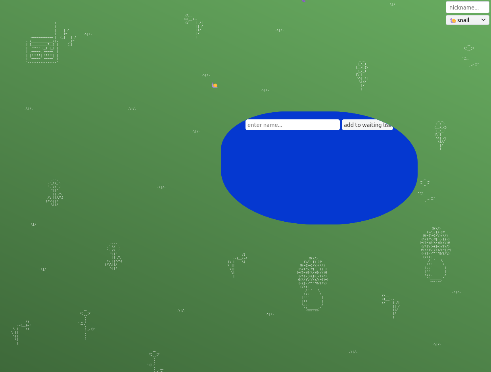

PUCD 2126-G: Core Interaction (Spring 2020)
Mark Beasley / beasleym@newschool.edu

Enter the garden
@}-,--'--
week 1:
command line and git
,
html
week 2:
Intro to CSS
Stars Demo
Fonts Demo
week 3:
Adv. CSS
Powers of Ten example
week 4:
Animating CSS
Firefly Demo
homework:
Exercise B
week 5:
Intro to JS
Exercise B Results
week 6:
Adding Interactivity: JavaScript aand User Events
Fizzy Water Demo (part 1)
week 7:
Working with Text in JavaScript
Fizzy Water Demo (part 2)
week 8 (optional, remote):
Keyboard events
,
garden playlist (feel free to add)
week 9 ~ spring break
week 10 ~ no class
homework:
Exercise C
week 11:
Exercise C Results
Variation Machines
<-- drag this into your bookmarks bar
Try it on these sites:
https://en.wikipedia.org/wiki/Oulipo
https://www.nytimes.com/2020/04/01/style/productivity-coronavirus.html
week 12: (zoom link to be emailed out before class)